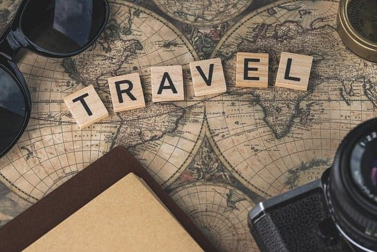

Присоединитесь к Европе с гражданством Болгарии!
Болгария — это страна с древними традициями, живописными природными красотами и динамично развивающейся экономикой. Получение болгарского гражданства предоставляет доступ ко всем преимуществам Европейского Союза, а также к уникальным возможностям в рамках самого государства. Гражданство Болгарии откроет перед вами двери к высокому уровню жизни, качественному образованию, лучшим медицинским услугам и стабильной деловой среде.
Преимущества гражданства Болгарии
-

Гражданство ЕС:
Безвизовое путешествие по более чем 150 странам, включая Шенгенскую зону.
-
Высокий уровень жизни:
Современные города, качественная инфраструктура и низкий уровень преступности.
-
Природные красоты:
Живописные горы, песчаные пляжи Чёрного моря и термальные курорты.
-
Качественное здравоохранение:
Доступ к современной медицинской помощи и европейским стандартам здоровья.
-
Налоговые льготы:
Привлекательная налоговая система для предпринимателей и инвесторов.
Процесс получения гражданства
Процесс получения болгарского гражданства включает несколько этапов:
-
Подготовка документов и заявление.
-
Проверка на знание языка и культурных аспектов страны.
-
Прохождение обязательного интервью (если требуется).
-
Ожидание одобрения заявки.
-
Получение болгарского паспорта.
Возможности для Бизнеса и Инвестиций
Болгария — одна из самых привлекательных стран ЕС для инвесторов. Здесь низкие налоги, благоприятная экономическая среда и доступ к европейскому рынку. Особенно выгодно инвестировать в недвижимость, туризм, сельское хозяйство и IT.

Часто задаваемые вопросы
-
Основные документы включают паспорт, свидетельство о рождении и документы, подтверждающие знание болгарского языка.
-
Да, Болгария предлагает программу получения гражданства через инвестиции в экономику страны.
-
Обычно процесс занимает от 6 месяцев до 2 лет, в зависимости от обстоятельств.
-
Требуется базовое знание болгарского языка, чтобы пройти собеседование.
-
Да, Болгария разрешает двойное гражданство.